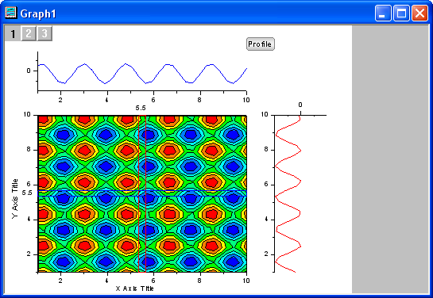
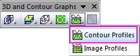

Konturprofile
Contour-Profile
- 
Datenanforderungen
- Matrix: Ein Matrixblatt. Ein Blatt mit mehreren Objekten wird unterstützt.
oder
- Arbeitsblatt: In XYZ-Spalten angeordnete Arbeitsblattdaten oder virtuelle Matrix.
oder
- Bild: Ein Bildfenster. Ein Bild mit mehreren Frames wird unterstützt. Lesen Sie auf dieser Seite unten, wie Sie durch alle Frames gehen.
Diagramm erstellen
Aktivieren Sie eine Matrix oder ein Arbeitsblatt oder ein Bildfenster.
Wählen Sie im Menü .
oder
Klicken Sie auf die Schaltfläche Konturprofile auf der Symbolleiste 3D- und Konturdiagramme.

Vorlage
profile_contour.otpu
(installiert im Origin-Programmordner)
Weitere Informationen
Weitere Informationen zur Profilerstellung von Daten finden Sie auf dieser Seite.